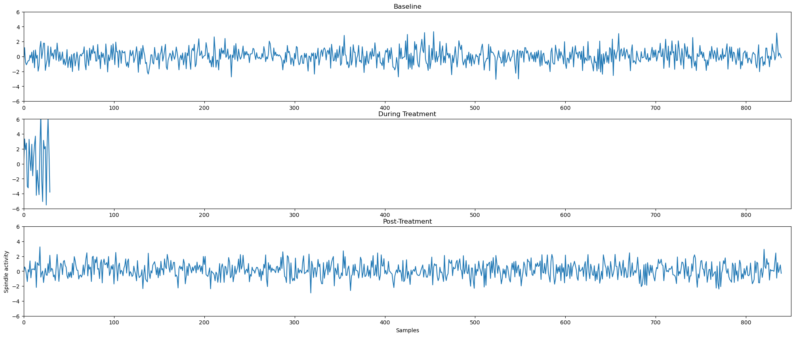
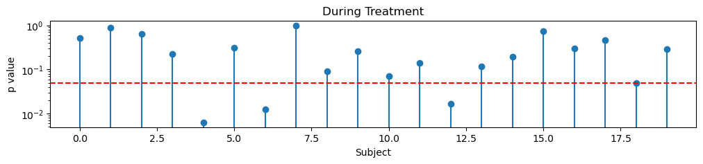
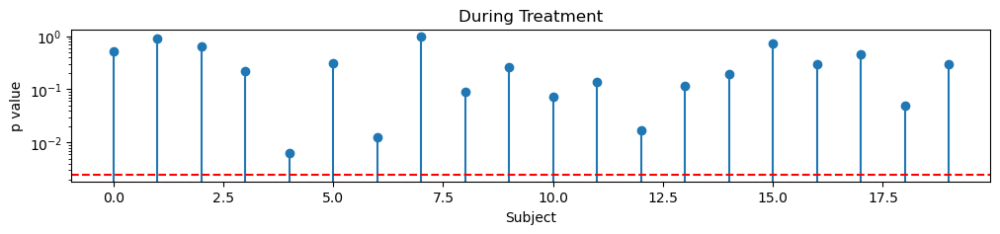
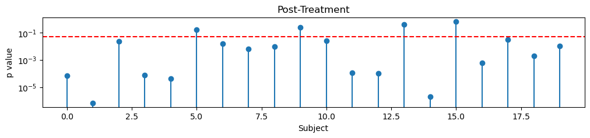
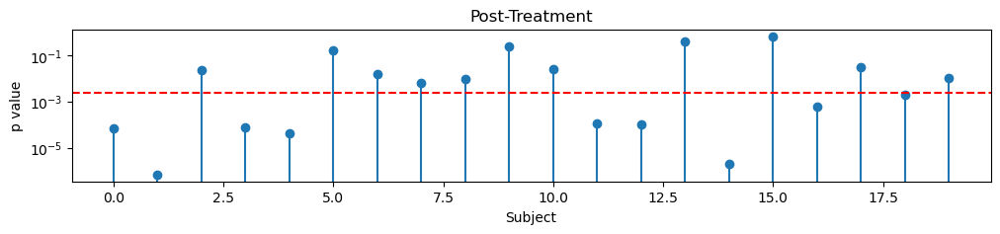

# !git clone https://github.com/Mark-Kramer/METER-Units.gitPutting the p-value in Context
Neuroscience researchers typically report p-values to express the strength of statistical evidence; but p-values are not sufficient on their own to understand the meaning and value of a scientific inference. In this unit, learners will learn how to interpret the p-value, how to express the size of an effect and uncertainty about a result, and how to interpret results at both the individual and population levels.
Alert: If you’re running this on Google Colab, then uncomment and run the next two cells.
# import sys
# sys.path.insert(0,'/content/METER-Units')1 - Here’s some data, give me the p’s!
# Load modules
import numpy as np
import matplotlib.pyplot as plt
import scipy.stats as stats
from pvalue_functions import *Introduction: - Your lab collects an EEG biomarker of memory (sleep spindles) from N=20 human subjects.
ADD GRAPHICAL ELEMENTS
To do so, your lab measures the power in the spindle band (9-15 Hz) twice per minute. Your lab has a reliable method to detect spindle activity; this detector is known to be accurate outside of treatment. We expect it to still work during treatment, but we also expect more variability in the spindle power estimates (hence more variability in the detections) during treatment.
Your lab measures spindle activity during three conditions:
Baseline: Data collection lasts 7 hours while the subject sleeps on an evening before the intervention. This results in 840 samples of spindle activity for each subject.
During Treatment: Data collection during a 15 minute intervention during sleep, resulting in 30 samples of spindle activity for each subject.
Post-treatment: Data collection after intervention lasts 7 hours, while the subject sleeps, resulting in 840 samples of spindle activity for each subject.
Your PI says: I want to know if there’s an effect of treatment in each human. Give me the p-values!
Q: What does the PI mean by “Give me the p-values”?
A: (Short answer)
Example Learner Answers: 1. The PI wants the p-values from tests comparing spindle activity across conditions.
2. They mean to test if treatment significantly changed spindle power within each subject.
3. The PI is asking for p-values to determine if there’s a statistical effect of treatment.
4. It means running tests to see if spindle activity differs between Baseline, Treatment, and Post-treatment.
5. The PI wants statistical evidence to show treatment effects on spindle activity.
Q: For each scenario below, decide if it is appropriate to use a p-value to address the research question (answer yes or no).
- Does the proportion of people who prefer brand A over brand B differ from 50%?
- What is the exact average height of an adult giraffe in meters?
- Does a new vaccine significantly reduce infection rates compared to the old vaccine?
- How long does it take to completely drain a 50,000-gallon swimming pool?
- Does changing the color of a website’s button increase user clicks statistically significantly?
A: 1. Yes, because we can statistically test if the proportion differs from 50%.
2. No, because we are looking for an exact value rather than testing a hypothesis.
3. Yes, because we can test if the new vaccine’s effect differs significantly from the old one.
4. No, because it’s a direct measurement rather than a hypothesis test.
5. Yes, because we can compare the click rates before and after the color change to see if the difference is statistically significant.
Q: Have you ever computed a p-value (in software)?
A: (Survey)
2- Let’s do it: Define & compute p-values.
Let’s start by considering answers to these two questions:
What does a p-value test?
- CENTER: Help make a graphic for this?
Sometimes statisticians think backwards. We’d like to know how the spindle activity changes relative to baseline. To test this, we’ll start by assuming the opposite: we’ll hypothesize that the spindle activity does not change. This is called the null hypothesis. The p-value indicates how much evidence we have to reject the null hypothesis given the data we observe. It’s like a measure of surprise. If we’re surprised by the observed data, then we’ll reject the null hypothesis, and conclude we have evidence that the spindle activity changes relative to baseline.
Alternatively, if we’re not surprised by the observed data, then we’ll conclude that we lack sufficient evidence to reject the null hypothesis. There’s an important subtely here that statisicians like to point out - when we’re testing this way, we never accept the null hypothesis. Instead, the best we can do is talk like a statistican and say things like “we fail to reject the null hypothesis”.
What does p<0.05 mean?
The probability of observing the data, or something more extreme, under the null hypothesis is less than 5%. This is typically considered sufficient evidence to reject the null hypothesis in favor of the alternative hypothesis (which posits that there is an effect or a difference). In other words, a p-value less than 0.05 suggests that the observed data is unlikely to have occurred by random chance alone, assuming the null hypothesis is true, leading researchers to reject the null hypothesis.
Let’s now return to the human data. First, let’s consider the null hypothesis the PI wants to test.
Q: The PI says “I expect that during treatment the spindle activity exceeds the baseline spindle activity.” What is the null hypothesis?
A: (Multiple Choice)
Wrong answer: The average spindle activity during treatment is guaranteed to be higher than baseline.
Wrong answer: The average spindle activity during treatment is guaranteed to be lower than baseline.
Wrong answer: A difference in average spindle activity exists between treatment and baseline.
Correct answer: No difference in average spindle activity exists between treatment and baseline.
Now, let’s load the data and compute the p-values.
baseline, during_treatment, post_treatment = load_data()Let’s start by investigating the structure of the data.
print(baseline.shape)
print(during_treatment.shape)
print(post_treatment.shape)All three variables consist of observations from 20 subjects (the number of columns). We collect 30 samples during treatment and 840 samples at baseline (i.e., before treatment) and after treatment; this is the the number of rows for each variable.
You might think of these variables as rectangles (or matrices), where each row indicates a sample of spindle activity, and each column indicates a subject:

Q: Look at the representations of the data above. What differs about the data during treatment, compared to baseline and post-treatment?
A: (Multiple Choice)
Wrong answer: There are fewer subjects during treatment.
Correct answer: There are fewer samples during treatment.
To get a sense for the the data, let’s plot the spindle activitys during baseline for one subject:
f, ax = plt.subplots(3,1, figsize=(25,10))
ax[0].plot(baseline[:,0]); ax[0].set_xlim([0,850]); ax[0].set_ylim([-6,6]); ax[0].set_title('Baseline');
ax[1].plot(during_treatment[:,0]); ax[1].set_xlim([0,850]); ax[1].set_ylim([-6,6]); ax[1].set_title('During Treatment');
ax[2].plot(post_treatment[:,0]); ax[2].set_xlim([0,850]); ax[2].set_ylim([-6,6]); ax[2].set_title('Post-Treatment');
plt.xlabel('Samples'); plt.ylabel('Spindle activity');
Q: What values do you observe for the spindle activity?
A: The values tend to fluctuate around 0, and can be both positive and negative. Here, the spindle activity has been z-scored during each recording interval relative to baseline. So, the values we observe indicate changes relative to the mean baseline spindle activity; positive (negative) values indicate increases (decreases) in spindle activity relative to the baseline activity.
Q: What differences or similarites do you notice in spindle activity in baseline, during treatment, and post-treatment?
A: Similarities: - All fluctuate around 0. This makes sense because all values are normalized relative to the mean baseline spindle activity.
Differences: - During treatment there are fewer samples. - During treatment, the fluctuations are bigger (the data is “noiser”).
Let’s now compute the p-values during treatment. That’s the item of primary scientific interest in our study.
To do so, we’ll start by assuming the null hypothesis of no difference in spindle rate during treatment.
Because we’ve subtracted the baseline spindle rate, the null hypothesis becomes:
Null hypothesis: Mean spindle rate during treatment = 0
results = create_dropdown_compute_pvalues(during_treatment);# Extract data from dropdown.
p_value_during = results['p_value']The list above consists of 20 p-values, one for each subject.
Remember that each p-value indicates the probability of observing the data, or something more extreme, under the null hypothesis that the mean spindle rate during treatment is 0.
Let’s investigate the shape of these results:
print(p_value_during.shape)(20,)Q: Do these shapes make sense?
A: Yes, there’s one p-value per subject, and we have 20 subjects.
Let’s print the p-values for each subject:
for k in np.arange(0,20):
print('Subject ', k, ', p=', np.array2string(p_value_during[k], precision=5))Subject 0 , p= 0.51764
Subject 1 , p= 0.88867
Subject 2 , p= 0.63339
Subject 3 , p= 0.22295
Subject 4 , p= 0.00638
Subject 5 , p= 0.30963
Subject 6 , p= 0.01242
Subject 7 , p= 0.99443
Subject 8 , p= 0.08998
Subject 9 , p= 0.26046
Subject 10 , p= 0.07091
Subject 11 , p= 0.13959
Subject 12 , p= 0.01699
Subject 13 , p= 0.11679
Subject 14 , p= 0.19091
Subject 15 , p= 0.734
Subject 16 , p= 0.30088
Subject 17 , p= 0.46395
Subject 18 , p= 0.04994
Subject 19 , p= 0.29267Let’s also plot the p-values:
# Plot the p-values during treatment
plt.figure(figsize=(12, 2))
plt.stem(p_value_during);
plt.axhline(y=0.05, color='r', linestyle='--')
plt.xlabel('Subject'); plt.ylabel('p value'); plt.title('During Treatment'); plt.yscale('log')
Q: Interpert the print-out and plots of p-values. What do you see?
A: The p-values tend to exceed 0.05 (red dashed line in the figure), although a few subjects have p<0.05.
Now, do we have evidence to reject the null hypothesis?
Maybe … if we had performed one statistical test, then we typically reject the null hypothesis if
p < 0.05
But here we compute 20 test (one for each subject).
When we perform multiple tests, it’s important we consider the impact of multiple comparisons. We cover this topic in detail in the Multiplicity Unit.
Here we’ll chose a specific appraoch to deal with multiplicity - we’ll apply a Bonferroni correction. The Bonferroni correction reduces the Type I error rate by dividing the desired overall significance level (here 0.05) by the number of tests performed (here 20). Stated simply, the Bonferroni test adjusts the significance level by dividing it by the number of comparisons. Doing so reduces the risk of Type I errors (false positives). For more information, see Multiplicity Unit.
So, for our analysis of the p-values from 20 subjects, let’s compare the p-values to a stricter threshold of
p < 0.05 / 20 or p < 0.0025
Let’s plot the p-values versus this new threhsold.
# Plot the p-values during treatment
plt.figure(figsize=(12, 2))
plt.stem(p_value_during);
plt.axhline(y=0.05/20, color='r', linestyle='--')
plt.xlabel('Subject'); plt.ylabel('p value'); plt.title('During Treatment'); plt.yscale('log')
print('Significant p-values during treatment = ',np.sum(p_value_during < 0.05/20))Significant p-values during treatment = 0
Q: After the Bonferroni correction, can we reject the null hypothesis for any subject?
A: No. None of the p-values are less than 0.05/20.
Q: The PI requested “Give me the p’s!”. Do you have evidence to reject the null hypothesis during treatment?
A: No! Because the p-values are large, we find no evidence to reject the null hypothesis for any subject.
Q: We do not find any p-values that pass our significance threshold during treatment. Does this mean that the spindle activity during treatment does not change relative to baseline?
A: No! We never accept the null hypothesis. Remember we have to talk like a statistician. Instead, we say:
“We fail to reject the null hypothesis that the spindle activity during treatment differs from baseline.”
Summary: We’ve computed p-values testing the null hypothesis:
- that the spindle activity during treatment = 0.
Q: Before finishing this Mini, let’s review:
- What is the scientific question we’re seeking to answer? (Multiple Choice)
- What statistical approach did we use to answer that question? (Multiple Choice)
A: 1. Does the spindle activity during treatment differ from the baseline spindle activity?
- To answer this question, we assumed a null hypothesis of no difference in spindle activity during treatment compared to 0. We then tested this null hypothsis for each subject, and computed a p-value. We rejected the null hypothesis if the p-value was small enough. Notice that, in doing so, we compute a p-value to provide a yes/no answer to the question: do we have evidence that the spindle activity during treatment differs from 0?
3- Maybe there’s something else we can publish?
The results in Mini 2 are discouraging; we find no evidence of a change in spindle activity from baseline during treatment.
That’s discouraging, so the PI asks we continue to continue exploring the data.
Data exploration is common in neuroscience. In general, as a practicing neuroscientist, it’s fine to explore your data for interesting features.
However, if you do, it’s important to make it clear in any future reporting of the results.
Let’s begin our explorationg by investigating the change in spindle activity post-treatment.
We do not expect a change in spindle activity post-treatment, compared to baseline.
Q: Given this expectation, how can we test it?
A: Let’s make the null hypothesis:
Null hypothesis: Mean spindle activity post-treatment = 0
Remeber, we’ve subtracted the baseline spindle activity from the post-treatment value. So, no change in spindle activity post-treatment would result in values the fluctuate around 0.
Alert:
We’re embarking on exploratory data analysis after our initial hypothesis failed.
Exploratory analysis is fine, we just need to be careful about our approach and how we present our results. For more details, check out the Multiplicity Unit.Now, let’s repeat the analysis in Mini 2, but now examining the post-treatment spindle activity.
results = create_dropdown_compute_pvalues(post_treatment);# Extract data from dropdown.
p_value_post = results['p_value']Let’s print and plot the p-values for each subject:
for k in np.arange(0,20):
print('Subject ', k, ', p=', np.array2string(p_value_post[k], precision=5))Subject 0 , p= 7.0968e-05
Subject 1 , p= 6.84004e-07
Subject 2 , p= 0.02359
Subject 3 , p= 7.58302e-05
Subject 4 , p= 4.28276e-05
Subject 5 , p= 0.17057
Subject 6 , p= 0.01569
Subject 7 , p= 0.00628
Subject 8 , p= 0.00911
Subject 9 , p= 0.23845
Subject 10 , p= 0.02688
Subject 11 , p= 0.00011
Subject 12 , p= 0.00011
Subject 13 , p= 0.41621
Subject 14 , p= 1.94807e-06
Subject 15 , p= 0.68545
Subject 16 , p= 0.00059
Subject 17 , p= 0.03251
Subject 18 , p= 0.00193
Subject 19 , p= 0.01037# Plot the p-values post-treatment
plt.figure(figsize=(12, 2))
plt.stem(p_value_post);
plt.axhline(y=0.05, color='r', linestyle='--')
plt.xlabel('Subject'); plt.ylabel('p value'); plt.title('Post-Treatment'); plt.yscale('log')
Let’s again correct for multiple compariosns (we’ve computed 20 p-values, one from each subject) using a Bonferroni correction.
plt.figure(figsize=(12, 2))
plt.stem(p_value_post);
plt.axhline(y=0.05/20, color='r', linestyle='--')
plt.xlabel('Subject'); plt.ylabel('p value'); plt.title('Post-Treatment'); plt.yscale('log')
print('Significant p-values post-treatment = ',np.sum(p_value_post < 0.05/20))Significant p-values post-treatment = 9
Q: Compare these two sets of p-values, calculated during treatment (Mini 2) and post-treatment. What does it mean?
A: Look at how small the p-values are post-treatment!
9 p-values post-treatment are less than 0.05/20, the Bonferroni corrected p-value threshold.
Notice that, during treatment, the p-values are much larger, and we find no p-values less than 0.05/20.
We find many more significant p-values post-treatment (9 out of 20, after Bonferroni correction).
Our results seem to reveal a new conclusion:
- In Mini 2, we found no evidence of a change in spindle activity
during treatment. - In this Mini, we find many very small p-values (less than 0.05/20)
post-treatment, and evidence a significant change in spindle activity post-treatment in 9/20 subjects.
The PI is very excited with our progress, as these results upend the literature.
The PI drafts the title for a high-impact paper:
“Post-Treatment Paradox: Clear Human Responses, Despite Absence of Treatment Effect”
But are we sure?
Q: Review the characteristics of the during and post-treatment data (Mini 1). How might these characteristics impact the p-values?
A: This is a very important question … and we’re not going to answer it yet.
But here’s a hint: notice that we collect many more samples post-treatment, compared to during treatment. I wonder how this might impact our p-value comparisons …
Alert: Wait, I’m not so sure …
Why is the word seem in bold?
Why did you ask me to review the characteristics of the data, and think about how this might impact the data?
Moment of tension:
- Hook the learner - “something isn’t right and I want to know why.”
Q: EXTENSION EXERCISE: We’ve examined the spindle activity during treatment and post-treatment. How would you test the null hypothesis of spindle activity = 0 during the baseline condition?
Q: Before finishing this Mini, let’s review:
- What is the scientific question we originally sought to answer (Mini 2)? (Multiple Choice)
- What is the scientific question we answered in this Mini? (Multiple Choice)
- What statistical approach did we use to answer this scientific question? (Multiple Choice)
A: 1. Does the spindle activity during treatment differ from the baseline spindle activity?
Does the spindle activity post-treatment differ from the baseline spindle activity?
To answer the scientific question in this Mini, we assumed a null hypothesis of no difference in spindle activity post-treatment compared to 0. We then tested this null hypothsis for each subject, and computed a p-value. We rejected the null hypothesis if the p-value was small enough. Notice that, in doing so, we computed a p-value to provide a yes/no answer to the question: do we have evidence that the spindle activity during post-treatment differs from 0?
4- Not so fast: visualize, always.
We may have found an interesting result: a lower spindle activity post-treatment, but no effect during treatment.
To do so, we analyzed and compared p-values, testing specific null hypotheses.
We’ve hinted above that something isn’t right … let’s now dive in and identify where we went wrong.
Q: Let’s remember - what was the original scientific question we wanted to test?
A: Does the spindle activity during treatment differ from the baseline spindle activity?
Q: How did we test this original scientific question?
A: We computed p-values to test the null hypothesis of no difference in spindle rate during treatment from 0.
Our initial hypothesis “failed” … the p-values were too big.
So, we investigated the spindle activity post-treatment.
We applied the same strategy of computing p-values to test the null hypothesis that the spindle activity is 0.
We have focused (almost exclusively) on p-values.
Let’s again plot the p-values during and post-treatment:
plt.figure(figsize=(12, 2))
l1 = plt.stem(p_value_during, 'or')
l2 = plt.stem(p_value_post, 'ob')
plt.yscale('log')
plt.axhline(y=0.05/20, color='r', linestyle='--')
plt.xticks(np.arange(0,20));
plt.xlabel('Subject'); plt.ylabel('p value');
plt.title('During Treatment (red), Post-treatment (blue)');Q: For each subject, compare the p-values during treatment (red) versus post-treatment (blue). What do you observe?
A: We oberve a post-treatment effect in many subjects (the p-value is small), but not during treatment (the p-value is big).
So far, we’ve used the spindle measurements to compute p-values.
But, we’ve almost completely ignored the spindle measurements themselves!
Now, let’s return to the spindle measurements and look at those values directly.
Q: Given our analysis of the p-values, how do you expect the spindle measurements behave during treatment and post-treatment?
A: - Because we do not find significnat p-values during treatment, I expect these values to appear near 0. - Because we do find significnt p-values post-treatment, I expect these values to differ from 0.
plt.figure(figsize=(12, 2))
for k in np.arange(0,20):
plt.plot(np.tile(k,(840,1))-0.25, baseline[:,k], '.', color='k')
for k in np.arange(0,20):
plt.plot(np.tile(k,(30,1)), during_treatment[:,k], '.', color='r')
for k in np.arange(0,20):
plt.plot(np.tile(k,(840,1))+0.25, post_treatment[:,k], '.', color='b')
plt.axhline(y=0, color='k')
plt.xlabel('Subject'); plt.ylabel('Spindle activity'); plt.title('Baseline (black), During Treatment (red), Post-Treatment (blue)'); #plt.ylim([0,1]);
plt.xticks(np.arange(0,20));Q: Looking at the plots of spindle measurements, what do you observe? More specifically: 1. Do you observe an effect during treatment? 2. Do you obesrve an effect post-treatment? 3. Are these plots consistent with you p-value results?
A: 1. Yes, sort of … the spindle measurements during treatment appear larger than post-treatment. How can that be if the p-values are big? 2. Not really … because we find significant p-values post-treatment, I expect these values to differ from 0 and from the distribution of baseline values. But I don’t see that here … 3. Not really … we concluded that there’s an effect post-treamtnet, but not during treatment. However, these plots of spindle measurements aren’t consistent with our conclusions.
It’s nice to visualize all of the data, but doing so can also be overwhelming.
Let’s summarize the spindle measurements in for each subject by ploting the mean and the standard error of the mean.
# Plot the spiking from an example neuron.
plt.figure(figsize=(12, 2))
for k in np.arange(0,20):
mn = np.mean(baseline[:,k]);
sd = np.std( baseline[:,k]);
K = np.shape(baseline)[0];
plt.plot(k-0.2, mn, 'o', color='k')
plt.plot([k-0.2,k-0.2], [mn-2*sd/np.sqrt(K), mn+2*sd/np.sqrt(K)], color='k')
for k in np.arange(0,20):
mn = np.mean(during_treatment[:,k]);
sd = np.std( during_treatment[:,k]);
K = np.shape(during_treatment)[0];
plt.plot(k, mn, 'o', color='r')
plt.plot([k,k], [mn-2*sd/np.sqrt(K), mn+2*sd/np.sqrt(K)], color='r')
for k in np.arange(0,20):
mn = np.mean(post_treatment[:,k]);
sd = np.std( post_treatment[:,k]);
K = np.shape(post_treatment)[0];
plt.plot(k+0.2, mn, 'o', color='b')
plt.plot([k+0.2,k+0.2], [mn-2*sd/np.sqrt(K), mn+2*sd/np.sqrt(K)], color='b')
plt.axhline(y=0, color='k')
plt.xlabel('Subject'); plt.ylabel('Spindle activity'); plt.title('Baseline (black), During Treatment (red), Post-Treatment (blue)');
plt.xticks(np.arange(0,20));Q: Looking at the summary plots of spindle measurement means and standard error of the means for each subject, what do you observe? More specifically: 1. Do you observe an effect during treatment? 2. Do you obesrve an effect post-treatment? 3. Are these plots consistent with you p-value results?
A: 1. Yes … the spindle measurements during treatment appear larger than post-treatment. How can that be if the p-values are big during treatement? 2. Not really … because we find significnt p-values post-treatment, I expect these values to differ from 0. But I don’t see that here, the black and blue dots appear to overlap near 0 … 3. Not really … we concluded that there’s an effect post-treatment, but not during treatment. However, these plots of spindle measurements aren’t consistent with our conclusions.
Let’s summarize what we’ve found so far:
| State | p-values | spindle activity |
|---|---|---|
| During treatment | p>0.05/20 (not significant) | mean spindle activity > 0 |
| Post-treatment | p<<0.05/20 (signficiant) | mean spindle activity \(\approx\) 0. |
Something’s not adding up here …
Looking at the spindle activity plots, we observe:
- the mean spindle activity during treatment often exceeds the mean spindle activity at baseline.
That’s the oppostive conclusion we made from the p-values!
Hmm … we better think carefully about the paper title …
Alert: We’re made multiple statistial errors:
Compared p-values
Exploratory analysis
Q: Why do the spindle activities during treatment exceed the baseline spindle activity, but p>0.05? And, why are the post-treatment spindle activities so near the baseline spindle activity, but p<<0.05?
A: The p-value measures the strength of evidence against the null hypothesis.
Two things impact the strength of evidence: - the effect size (i.e., the values of the spindle activity). - the number of observations
Q: How do the number of observations differ during treatment versus post-treatment? How might this impact the results?
A: - We have many more observations post-treatment. Therefore, we can accumulate enough evidence to detect a weak effect post-treatment. - We have few observations during treatment. Therefore, even though the effect is strong, we don’t have enough evidence to declare an effect during treatment.
Conclusion / Summary / Morale:
We began with the scientific statement:
“I expect that during treatment the spindle activity exceeds the baseline spindle activity.”
Our initial approach focused on computing and comparing p-values. That’s a bad idea. We’re not as interested in comparing the evidence we have for each null-hypothesis (the p-value); that depends on both the effect size and the number of observations.
Instead, we’re more interested in comparing the spindle activity between condidtions. In other words, we’re intested in the effect size, not the p-value.
This suggests a different analysis path forward for an improved approach. We can answer the same scienfitic question by comparing the spindle activitys beteween conditions, not the p-values. We’ve started to see this in the plots of spindle activity at baseline, during treatment, and post-treatment. For more analysis (e.g., different statistical test and effect size) continue on to other Minis.
5- A different test … a different result.
Originally (in Mini 2), we considered the null hypothesis:
- No difference in mean spindle activity during treatment from 0.
Let’s now consider a different null hypothesis:
- No difference in mean spindle activity during treatment versus baseline.
To test this null hypothesis, we’ll apply a different test:
- a subject specific two-sample t-test.
result = stats.ttest_ind(baseline, during_treatment, alternative='less')
p_value_baseline_vs_during = result.pvalue
for k in np.arange(0,20):
print('Subject ', k, ', p=', np.array2string(p_value_baseline_vs_during[k], precision=4))plt.figure(figsize=(12, 2))
plt.stem(p_value_baseline_vs_during);
plt.axhline(y=0.05/20, color='r', linestyle='--')
plt.xlabel('Subject'); plt.ylabel('p value'); plt.title('Baseline versus During Treatment'); plt.yscale('log')
print('Significant p-values during treatment = ',np.sum(p_value_baseline_vs_during < 0.05/20))Q: Interpret these p-value results in terms of the null hypothesis.
A: We conclude that, in most cases, we reject the null hypothesis of no difference in spindle activity between baseline versus during treatment. We conclude that the spindle activity is higher during treatment compared to baseline in most subjects (14/20).
Q: Compare the results of these tests for each human to the results in Mini 2.
A: In Mini 2, we computed p-values during treatment versus 0. Now, we compute p-values during treatment versus baseline. These are different tests. The latter tests more directly our scientific question.
6- So, what went wrong?
What is the scientifc question we’re actually trying to answer?
(PENDING): effect-size
(REVIEW): Two things impact the strength of evidence: - the effect size (i.e., the values of the spindle activity). - the number of observations
7- One test to rule them all: an omnibus test.
(PENDING)
8- Beyond p-values: estimate what you care about.
(PENDING): estimate effect size during & post, and compare.